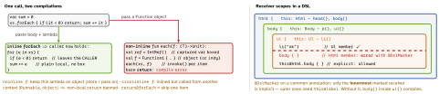

cross-platform · folio
In one line: Kotlin’s “syntax” is mostly conventions the compiler rewrites: a lambda
typed T.() runs with -> Rthis: T (builders, Gradle, Compose);
inline pastes a function and its lambdas into the caller (no allocation,
return leaves the caller, reified works); operator/infix
map symbols to named functions; by forwards a property or a whole interface to
another object. None of it is dynamic — all resolved at compile time.
Download PDF Print view LaTeX source


Inline — mechanism & rules
- Wins: no
Functionobject per call, noRefboxes for capturedvars, non-localreturn,reified T;break/continueinside inline lambdas stable since 2.2. Cost: bytecode grows per call site; no lambda param ⇒ IDE warns “insignificant”. - A
public inlinebody is copied into other modules, so it may only touch public API — or@PublishedApi internal. Changing it needs callers recompiled. - Without inline, a lambda compiles to
invokedynamic(2.0 default) or a class;return@labelis the only return allowed in it.
Operator conventions & infix
| you write | compiler calls | you write | compiler calls |
|---|---|---|---|
a + b | a.plus(b) | a[i] = v | a.set(i, v) |
a | plusAssign, else a = a + b | f(x) | f.invoke(x) |
x in c | c.contains(x) | a, a | rangeTo, rangeUntil |
a < b | a.compareTo(b) < 0 | val (x, y) = p | component1(), 2() |
a | a?.equals(b)?:(b===null) | +"txt", -a | unaryPlus, unaryMinus |
operator modifier (member or extension).
infix fun A.to(b: B) ⇒ a to b (one param, no default). ==
can only be customised via equals; === is identity.
Extensions are static
- Compiled to
static f(Receiver r, …): chosen by the declared type.val s: Shape = Rect(); s.name()callsShape.name(). - A member always wins over an extension with the same signature (warning: “shadowed”); extensions can’t reach
privatemembers. - Nullable receivers (
fun String?.orEmpty()), companion extensions (fun Foo.Companion.of()); extension properties have no backing field — computed only. Declared inside a class = scoped to it (two receivers).
Example — a type-safe builder
@DslMarker annotation class HtmlDsl
@HtmlDsl abstract class Tag { val kids = mutableListOf<Tag>()
protected fun <T : Tag> add(t: T, init: T.() -> Unit) =
t.apply(init).also { kids += it } }
class Html : Tag() { fun body(init: Body.() -> Unit) = add(Body(), init) }
class Body : Tag() { fun ul(init: Ul.() -> Unit) = add(Ul(), init) }
class Ul : Tag() { fun li(s: String) = add(Li(s)) {} }
fun html(init: Html.() -> Unit) = Html().apply(init) // entry point
val page = html { body { ul { li("a"); li("b") } } }Property delegation
val x by dcompiles to a hiddenx$delegatefield;get()=d.getValue(this,::x),set(v)=d.setValue(this,::x, v)—operatorfunctions taking(thisRef, property: KProperty<*>). Interfaces:ReadOnlyProperty/ReadWriteProperty.by lazymodes:SYNCHRONIZED(default, one lock, one init),PUBLICATION(may init twice, first wins),NONE(no sync — UI thread only). An exception in the initializer is rethrown; next access retries.Delegates.observable(init) { p, old, newruns after the set;->}vetoableruns before and returnsBoolean;Delegates.notNull()=lateinitfor primitives.by mapreadsmap[property.name];by this::otheraliases.provideDelegate(thisRef, prop): runs once at declaration — validate or register the name before the first access.
Class delegation & context parameters
class Cached(r: Repo) : Repo by r— generated forwarding methods; your overrides win, butr’s own internal calls never see them (forwarding, not inheritance).- Context parameters: preview 2.2 (
-Xcontext-parameters), stable 2.4.0 (Jul 2026), replacing context receivers. Used by name, passed implicitly by type; not on constructors.
context(log: Logger) fun sync(id: Int) { log.info("sync $id") }
context(_: Logger) fun syncAll() = ids.forEach { sync(it) } // passed on
fun main() = context(ConsoleLogger()) { syncAll() } // provide it
val token: String? by prefs.string("token") // custom delegate
val cfg by lazy(LazyThreadSafetyMode.NONE) { parse() } // main-thread onlyTraps
returninforEach {}ends the function — usereturn@forEach.- “Override” an extension — impossible, declared type decides.
by lazyholding a Context in a long-lived object = leak.
Remember: receiver lambdas build DSLs · inline pastes (return escapes) ·
operators are named functions · by forwards.